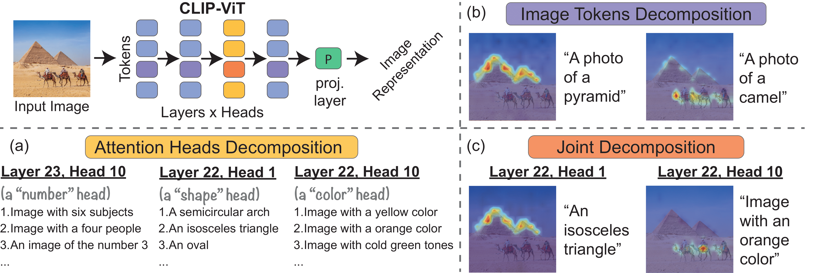
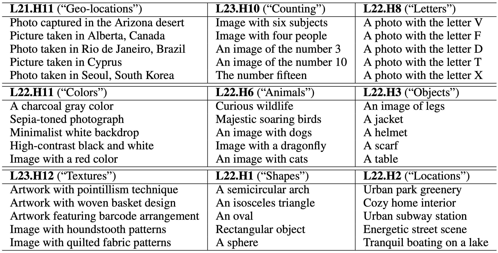
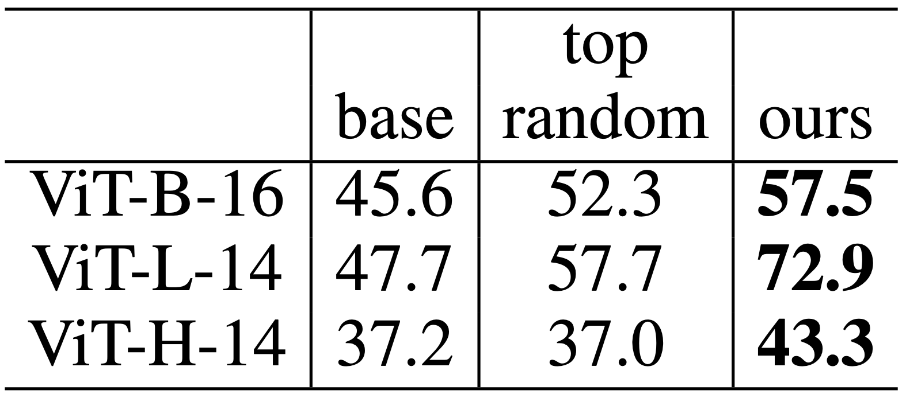
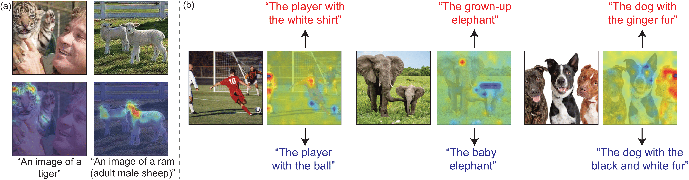
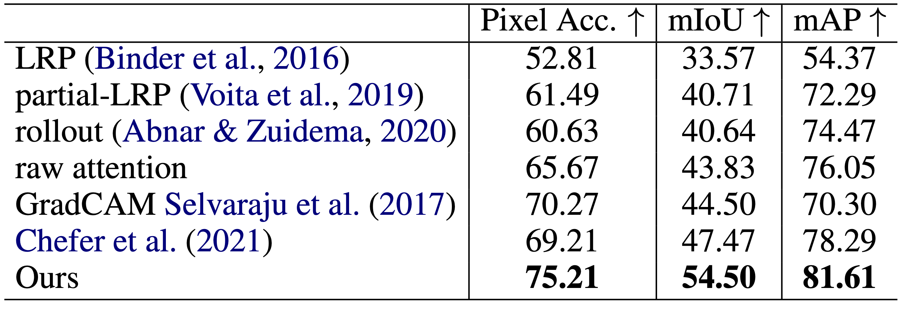

via Text-Based Decomposition
ICLR 2024 (Oral Presentation)

CLIP-ViT image representation decomposition. By decomposing CLIP's image representation as a sum across individual image patches, model layers, and attention heads, we can (a) characterize each head’s role by automatically finding text-interpretable directions that span its output space, (b) highlight the image regions that contribute to the similarity score between image and text, and (c) present what regions contribute towards a found text direction at a specific head.
We investigate the CLIP image encoder by analyzing how individual model components affect the final representation. We decompose the image representation as a sum across individual image patches, model layers, and attention heads, and use CLIP's text representation to interpret the summands. Interpreting the attention heads, we characterize each head's role by automatically finding text representations that span its output space, which reveals property-specific roles for many heads (e.g. location or shape). Next, interpreting the image patches, we uncover an emergent spatial localization within CLIP. Finally, we use this understanding to remove spurious features from CLIP and to create a strong zero-shot image segmenter. Our results indicate that a scalable understanding of transformer models is attainable and can be used to repair and improve models.
Decomposition into layers
We show that the CLIP-ViT image representation can be decomposed into direct contributions of individual layers of the image encoder ViT architecture. We mean-ablate these contributions and find that the last few attention layers have most of the direct effects on this representation.
The contributions from these last $L$ attention layers can be decomposed further as a sum across $N$ individual image patches and $H$ attention heads:
$CLIP_{image}(I) = \sum_{l=1}^L{\sum_{h=1}^H{\sum_{i=1}^{N}{{c_{i,l,h}}}}}$
Each summand $c_{i,l,h}$ lives in a joint vision-language space, so by computing the inner product $\langle c_{i,l,h}, CLIP_{text}(t)\rangle$ between the summand and a CLIP text representation $CLIP_{text}(t)$ we can get its contribution towards this text.
Decomposition into attention heads
The image representation can be decomposed into contributions of individual attention heads $c_{head}^{(l,h)} = \sum_{i=1}^{N}{{c_{i,l,h}}$. We present TextSpan, an algorithm for labeling the latent directions of each component $c_{head}^{(l,h)}$ with text descriptions. Our labeling reveals that some heads exhibit specific semantic roles:

Emergent similarity metrics in CLIPSince some heads specialize in image properties, we can use their intermediate representations to obtain a property-specific similarity metric. We use these metrics for retrieving the most similar images to a given input, according to these heads:

Top-8 nearest neighbors per head and image. We retrieve the most similar images to an input image by computing the similarity of the direct contributions of individual heads. As some heads capture specific aspects of the image (e.g. colors/objects), retrieval according to this metric results in images that are most similar regarding these aspects
Reducing known spurious cues We can use our knowledge of head-specific roles to manually remove spurious correlations. For instance, if the location is being used as a spurious feature, we can ablate heads specializing in geolocation to reduce reliance on the incorrect feature.We validate this idea on the Waterbirds dataset (Sagawa et al., 2019), and show a significant increase in worst-group accuracy:

Worst-group accuracy on Waterbirds. We reduce spurious cues by ablating property-specific heads (geo-location and location). As a baseline, we ablated 10 random heads and reported the top accuracy out of 5 trials.
Decomposition into image tokens
We can alternately decompose the representation across image tokens that correspond to locations in the image: $c_{token}^i=\sum_{l=1}^L{\sum_{h=1}^H{{{c_{i,l,h}}}}}$. Computing the inner product between each $c_{token}^i$ and a text representation allows us to obtain a heatmap of the image regions that contribute towards the given text. This decomposition uncovers an emergent spatial localization within CLIP:

Heatmaps produced by the image token decomposition. We visualize (a) what areas in the image directly contribute to the similarity score between the image representation and a text representation and (b) what areas make an image representation more similar to one text representation rather than another.
Binarizing these heatmaps (by applying a fixed threshold) produces foreground/background segments. We compare this simple segmentation method to zero-shot segmentations produced by other explainability methods in the same manner. Our method outperforms them by a large margin on the ImageNet-Segmentation dataset (Guillaumin et al., 2014):

Segmentation performance on ImageNet-Segmentation. The image tokens decomposition results in significantly more accurate zero-shot segmentation than previous methods.
Acknowledgements
We would like to thank Jean-Stanislas Denain for the insightful discussions and comments. We thank Jixahai Feng, Fred Zhang, and Erik Jones for helpful feedback on the manuscript. YG is supported by the Google Fellowship. AE is supported in part by DoD, including DARPA's MCS and ONR MURI, as well as funding from SAP. JS is supported by the NSF Awards No. 1804794 & 2031899.